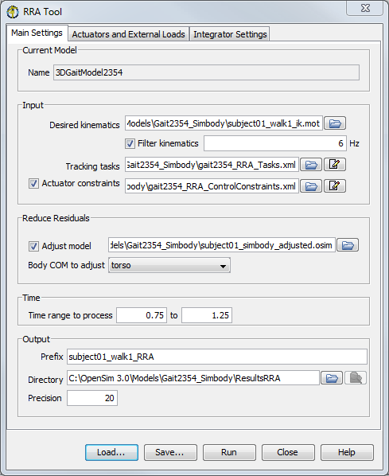

The topics covered in this section include:
How to Use the GUI
The computed muscle control tool is accessed by selecting Tools → Reduce Residuals … from the OpenSim menu. The RRA Tool is governed by three tabs:
|  |
|
|---|
Figure: Window for the RRA Tool. The residual reduction tool window has three panes. The Main Settings pane is shown here; there are other tabs for describing additional actuators (residual and reserve) to be used and integrator settings for forward dynamics simulation (as described in How to Use the Forward Dynamics Tool).
The Control Panel
At the bottom of all the Tool dialog windows are four buttons, located in what we call the Control Panel.
 |
|
|---|
Configuring the RRATool
To configure the RRATool, check Adjust model and specify a body to adjust. Specifically, RRA will compute the average residual forces that were necessary for tracking and use these values to change the center of mass location of the body specified and recommend mass adjustments. Secondly, kinematics are tracked (according to the task weightings) and experimental accelerations are not imposed as constraints.
Replacing Model Actuators
Critical to RRA is the replacement of muscles with just one ideal actuator per coordinate. In the gait2354_simbody example, these correspond to residuals for the pelvis' six degrees of freedom and reserves for all other model internal coordinates (joint angles). Under the Actuators and External Loads tab, you would load the gait2354_RRA_Actuators.xml file and select Replace model's force set (the only option).
Command-line Execution
RRA uses the command rra -S <setup file name>, for example,
rra -S subject01_Setup_RRA.xml
Next: Settings Files and XML Tag Definitions
Previous: How RRA Works
{kind=link}
{kind=link}